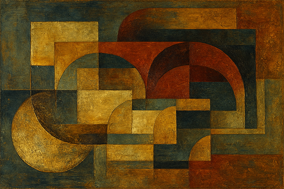
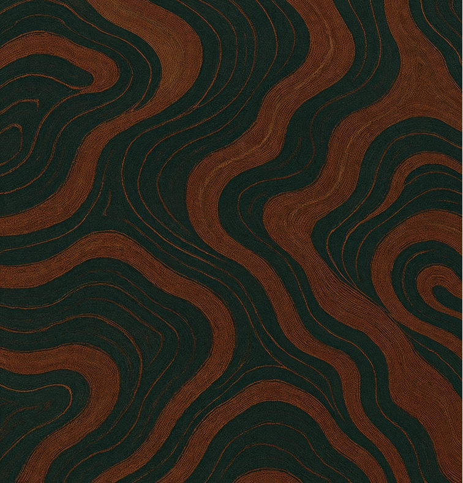
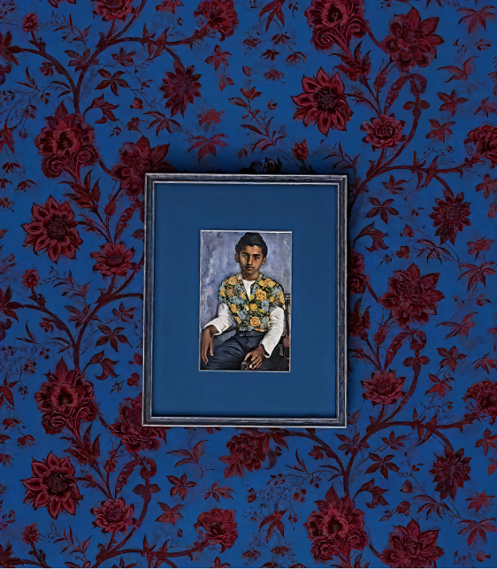
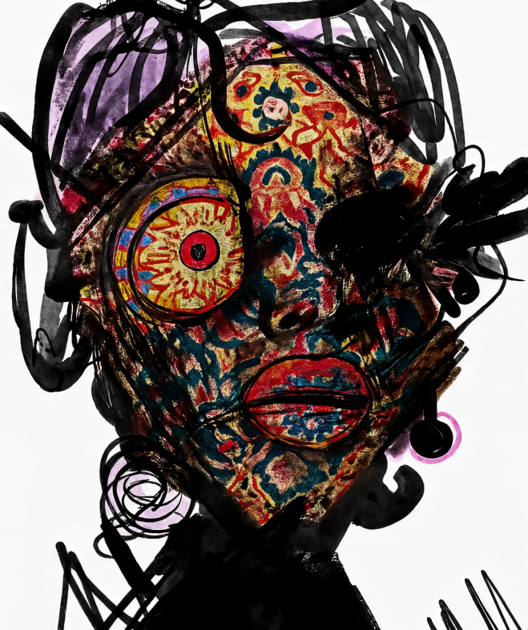
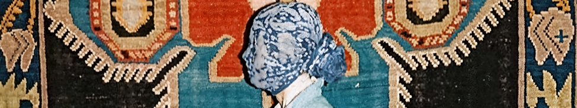

Коллекция 2025
Приходите не выбирать — а открывать.
Не покупать — а проживать.
Локации
Тверская, 23
Часы работы: ежедневно
с 09:00 до 20:00
Мясницкая, 12
Часы работы: пн-ср
с 12:00 до 21:00
С первых шагов — это не просто магазин, а место переживаний. На пересечении театра и дизайна, ткани и света, наш магазин приглашает прикоснуться к эстетике вне времени. Ковры становятся архитектурой, текстиль — движением, а каждый предмет говорит на языке формы и смысла.
От тактильных поверхностей до коллекционных изданий — мы создаём сцену, где каждый элемент продуман, а интерьер превращается в историю.
в продаже: картина “эхо формы”
Традиция, переосмысленная взглядом настоящего. «Эхо формы» — это живопись, созданная на стыке эпох: в её основе — техники старинных мастеров, но композиция, цвет и дыхание — из сегодняшнего времени. Фактурные мазки, потемневшее золото, тонкие слои краски — всё это будто перекликается с театральной декорацией, где прошлое — не воспоминание, а партнёр по диалогу.
Картина не просто украшает пространство, она формирует его ритм — мягкий, сложный, наполненный внутренним светом.
*Основа — многослойная живопись с использованием потёртого золотого пигмента и лака. Использована техника лессировки. Цветовая палитра включает охру, сажу, ультрамарин.

“Эхо формы”
холст 30х40, масло
78,000₽

*Состав: 80% лён, 20% шерсть.
Использованы натуральные волокна
с антистатической обработкой.
РАСШИРЕНИЕ КОЛЛЕКЦИИ: ТКАНЬ-КОВЁР «ЛИНИИ ЖИЗНИ»
Чудеса природы вплетены в текстуру — тонкую, живую. Ковровая ткань «Линии жизни» — это тактильный ландшафт, в котором каждый узор дышит ритмами природы. Лён с мерцающим отливом напоминает о солнечных тропах, мягкий ворс словно повторяет движения ветра в высокой траве, абстрактные линии текут, как высохшие русла рек.
Игры света, глубина фактуры, ощущение движения — этот ковер дополняет пространство, раскрывает его, превращая интерьер в чувственный опыт.
сделать предзаказ

НОВИНКА: «ВРЕМЯ И СМЫСЛЫ. ПОРТРЕТ ЭЛИАСА МАРОНА»
Этот портрет — не только изображение человека, но и отражение целой эпохи, её напряжённого ритма, внутренней тишины и невидимых линий.
В центре — фигура, которую можно счесть аллегорией, а можно — узнаваемым лицом: Элиас Марон, основатель Театра Ковров, сделавший ткань сценой. Каждый мазок — как голос, прорывающийся сквозь толщу лет, каждый взгляд — как движение, вспыхнувшее и оставшееся. Картина не объясняет, она предлагает всматриваться. В неё — и в себя.
*Холст, масло, 50×70 см.
Основа — плотный хлопковый холст на подрамнике.
Смешанная техника: масляная живопись и сухая кисть.

“Время и смыслы.
Портрет Элиаса Марона”
85,000₽

*Все иллюстрации выполнены художником-декоратором Ираклием Саркисяном, который работал в сценических мастерских Театра Ковров в 1950-х.
ИЗ АРХИВА: СБОРНИК «СЮЖЕТЫ И ТЕНИ»
Старинные страницы, впитавшие дыхание сцены. «Сюжеты и Тени» — редкое собрание театральных постановок и забытых народных сказок, собранных в одном томе. Потёртая обложка, шершавые листы, иллюстрации, будто эскизы декораций — всё в этой книге отсылает к времени, когда история передавалась голосом, паузой.
Каждый рассказ — как занавес, медленно открывающий мир образов, голосов и фантазии. Книга для тех, кто слышит музыку текста и видит свет рампы между строк.
FlyRug - не просто магазин, а сцена,
на которой разыгрывается спектакль дизайна.
Наша концепция — в синтезе эстетики, ощущения и смысла.
Мы создаём место, где каждый предмет — это акцент, а каждый гость — соавтор атмосферы.
События на неделю
Пресс-показ театральных артефактов
Вторник 17 июня, 11:00–14:00
Для связи по поводу мероприятия
пишите нам на connect@flyrug.art
Живой диалог с художниками театра
Среда — Пятница, 19:00–21:00
Театр Ковров × Garage: Искусство в движении
Четверг 6 июня, 15:00–19:00
Только по приглашению
Магазин театра ковров по адресу:
Тверская, 23
Часы работы: ежедневно с 09:00
до 20:00
